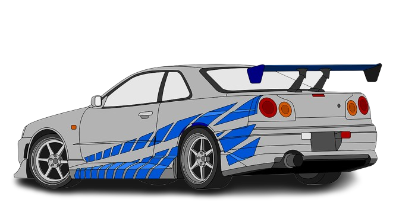
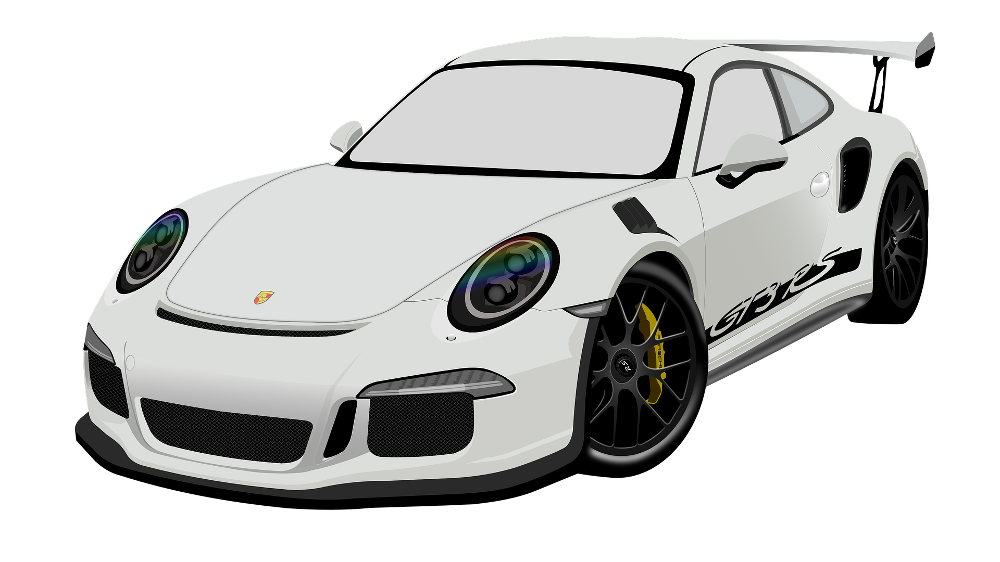

Der Nissan Skyline GT-R R34 ist ein legendärer japanischer Sportwagen, der von 1999 bis 2002 produziert wurde und sich durch seinen RB26DETT-Biturbo-Reihensechszylinder, den Allradantrieb ATTESA und seine herausragende Fahrperformance auszeichnet. Er war offiziell nur in Japan erhältlich, erfreut sich aber wegen seiner Leistung, seines Handlings und seiner Präsenz in Medien großer Beliebtheit.
Der Porsche 911 GT3 RS (Generation 992) kombiniert einen 4,0-Liter-Saugmotor mit 525 PS und ein Sieben-Gang-PDK. Seine aerodynamischen Features wie der verstellbare Heckflügel mit Drag Reduction System (DRS) erzeugen 860 kg Abtrieb bei 285 km/h. Das Konzept mit dem zentralen Mittenkühler stammt aus dem Rennsport und sorgt für optimierte Aerodynamik und Bremskühlung.